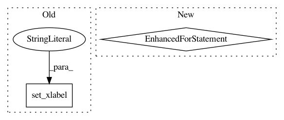

fdb5900995c0de782b324d62bdc2b6ce00a67e34,examples/api/two_scales.py,,two_scales,#Any#Any#Any#Any#Any#Any#,21
Before Change
ax2 = ax1.twinx()
ax1.plot(time, data1, color=c1)
ax1.set_xlabel("time (s)")
ax1.set_ylabel("exp")
ax2.plot(time, data2, color=c2)
ax2.set_ylabel("sin")
After Change
ax2 = ax1.twinx() // create a second axes that shares the same x-axis
for ax, data, c in ((ax1, data1, c1), (ax2, data2, c2)):
ax.plot(time, data, color=c)
// Color the y-axis (both label and tick labels)
ax.yaxis.label.set_color(c)
for t in ax.get_yticklabels():
t.set_color(c)
return ax1, ax2
// Create some mock data
t = np.arange(0.01, 10.0, 0.01)
In pattern: SUPERPATTERN
Frequency: 3
Non-data size: 2
Instances
Project Name: matplotlib/matplotlib
Commit Name: fdb5900995c0de782b324d62bdc2b6ce00a67e34
Time: 2018-01-24
Author: vincent.adrien@gmail.com
File Name: examples/api/two_scales.py
Class Name:
Method Name: two_scales
Project Name: kymatio/kymatio
Commit Name: 4f1e7f2f936bf5f3e6d1da8d8be843dc3273fe67
Time: 2018-11-21
Author: janden@flatironinstitute.org
File Name: examples/1d/plot_filters.py
Class Name:
Method Name:
Project Name: hpclab/rankeval
Commit Name: b104ef8ea5f6e98b0b05a5cf068bba0c8689d445
Time: 2017-07-27
Author: cristina.i.muntean@gmail.com
File Name: rankeval/visualization/effectiveness.py
Class Name:
Method Name: plot_tree_wise_average_contribution